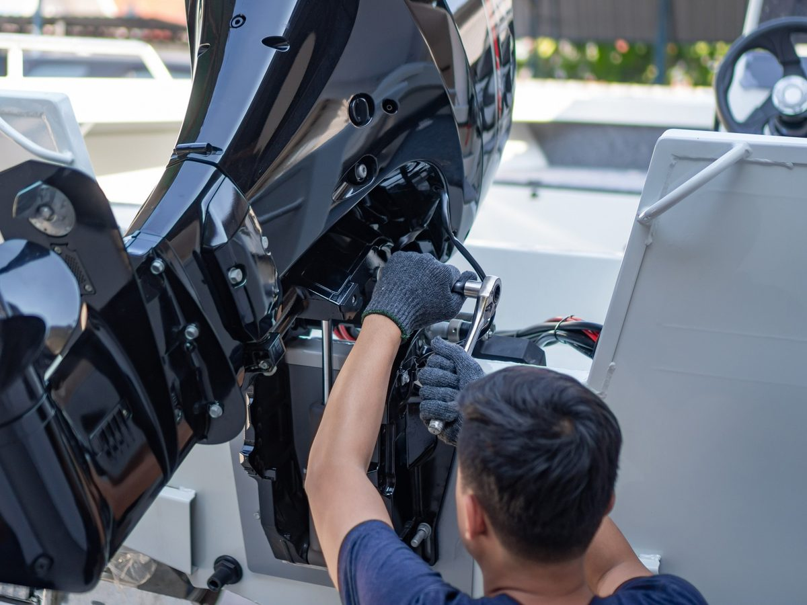
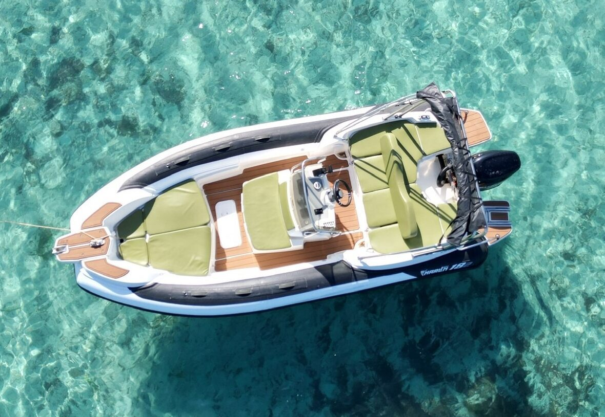
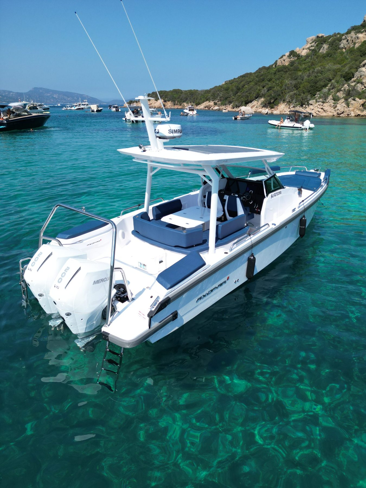

Vente
Neuf & occasion
Bateaux neufs Marlin, Rand, Selva et Protagon, moteurs Suzuki, ainsi qu'une sélection d'occasions rigoureusement contrôlées.

Porto-Vecchio · Corse-du-Sud
Trois générations de passionnés au service de votre plaisir nautique — vente, location, chantier naval et marina privée, au cœur du golfe le plus limpide de Corse.
L'héritage
Tout a commencé sur un terre-plein de Porto-Vecchio, avec quelques coques en bois et une ancre plantée en bord de route. Soixante ans plus tard, la même famille veille toujours sur les bateaux du golfe.
De la vente à l'entretien, de la première sortie en mer à l'hivernage, nous accompagnons armateurs et plaisanciers avec la précision d'un métier transmis de père en fils — et l'exigence que mérite la Méditerranée.

Nos univers
Bateaux neufs Marlin, Rand, Selva et Protagon, moteurs Suzuki, ainsi qu'une sélection d'occasions rigoureusement contrôlées.
Semi-rigides, day cruisers, vedettes et yachts, avec ou sans skipper.

Réparation, mécanique, refit et hivernage, dans les règles de l'art.
Une marina privée pour votre bateau, et des rendez-vous d'exception : couchers de soleil en mer, soirées feux d'artifice, expositions-ventes.
La flotte
Quatre familles de bateaux pour explorer les criques de Corse et de Sardaigne, de l'escapade à la journée à la grande croisière.

Le chantier
Notre chantier naval réunit sous un même toit tout ce dont votre bateau a besoin pour durer. Point de service agréé Absolut Yacht.



Le territoire
Des eaux transparentes de Palombaggia aux îles Lavezzi, jusqu'aux plages de Sardaigne : notre quai est le point de départ des plus belles navigations du Sud.
41.5912° N, 9.2795° E Voir sur la carteNos marques